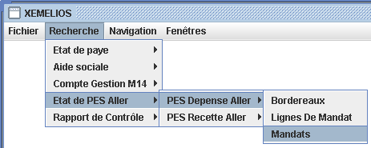
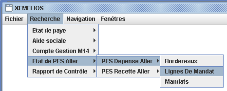
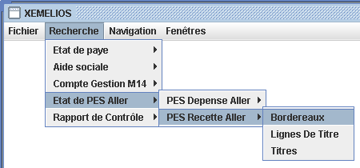
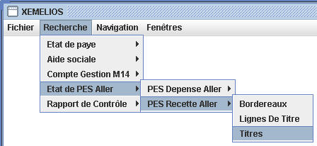
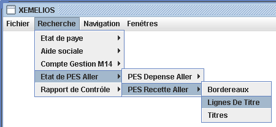
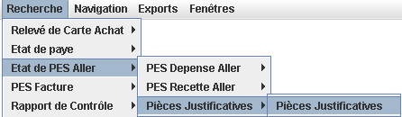

Etat de PES Aller
L'Etat de PES Aller regroupe les domaines Dépense et Recette, Pièces Justificatives.
Domaine PES Aller Dépense.
On accède aux recherches sur Bordereau (Dépense) par le menu Recherche / Etat de PES Aller / Bordereau (Dépense)

Ces recherches renvoient toujours une liste de Bordereaux (Dépense)
Les critères de recherche possibles sont :
Permet de filtrer sur les numéros de bordereau.
Permet de filtrer sur l'exercice du bordereau.
Permet de filtrer sur le type du Bordereau (Bordereau de mandats, Bordereau d'annulation de mandats, Bordereau d'ordres de paiement ordonnateur, Bordereau de mandats émis d'office).
Permet de filtrer sur le nombre de pièces qu comporte le bordereau.
Permet de filtrer sur la date d'émission du bordereau.
Permet de filtrer sur le montant HT du bordereau.
Permet de filtrer sur le montant TTC du bordereau.
On accède aux recherches sur Mandats par le menu Recherche / Etat de PES Aller / Mandats (Dépense)

Ces recherches renvoient toujours une liste de Mandats
Les critères de recherche possibles sont :
Permet de filtrer sur le numéro de Bordereau du mandat.
Permet de filtrer sur le numéro de mandat.
Permet de filtrer sur le type de mandat (Mandat ordinaire, Mandat correctif, Mandat ordre budgétaire, Mandat d'ordre mixte, Mandat émis après paiement, Mandat global, Mandat d'admission en non valeurs, Mandat collectif, Mandat sur marché, Mandat de rattachement, Ordre de paiement, Charges constatées d'avance).
Permet de filtrer sur la nature de mandat (Fonctionnement, Investissement, Inventaire, Emprunt, Régie, Annulation / Réduction, Complémentaire, Ré-émis, Annulant un titre, Annulation du mandat de rattachement, Paie, Retenue de garantie, Dernier acompte sur marché, Avance forfaitaire, Cession, Autre).
Permet de filtrer sur la date d'échéance du mandat.
Permet de filtrer sur le nombre de pièces justificatives.
Permet de n'afficher que les mandats éligibles au DGP.
Permet de filtrer sur la date de départ du DGP.
Permet de filtrer sur la date de fin du DGP.
Permet de filtrer sur le montant HT du mandat.
Permet de filtrer sur le montant TTC du mandat.
On accède aux recherches sur Lignes de Mandat par le menu Recherche / Etat de PES Aller / Lignes De Mandat

Ces recherches renvoient toujours une liste de Lignes de mandat
Les critères de recherche possibles sont :
Permet de filtrer par numéro de Bordereau de mandat.
Permet de filtrer par numéro de mandat.
Permet de filtrer par Compte par nature.
Permet de filtrer par Compte fonction.
Permet de filtrer par Opération.
Permet de filtrer par numéro de facture.
Permet de filtrer par pièce d'origine.
Permet de filtrer par exercice de rattachement.
Permet de filtrer par numéro de marché.
Permet de filtrer par numéro de régie.
Permet de filtrer par Identifiant National du tiers.
Permet de filtrer par type d'identifiant national du tiers (Siret, Sirent, Finess, NIR).
Permet de filtrer par catégorie de tiers.
Permet de filtrer par nature juridique de Tiers.
Permet de filtrer par mode de réglement.
Permet de filtrer par nom de tiers.
Permet de filtrer par prénom de tiers.
Permet de filtrer par Montant HT.
Permet de filtrer par montant TTC.
Domaine PES Recette Aller.
On accède aux recherches sur Bordereau (Recette) par le menu Recherche / Etat de PES Aller / Bordereau (Recette)

Ces recherches renvoient toujours une liste de Bordereaux (Recette)
Les critères de recherche possibles sont :
Permet de filtrer par numéro de bordereau.
Permet de filtrer par exercice du bordereau.
Permet de filtrer par type de bordereau (Bordereau ordinaire, Bordereau d'annulation/réduction, Bordereau d'ordre de recette, Bordereau de titre émis suite à décision juridictionnelle, Entête P503).
Permet de filtrer par date d'émission de bordereau.
Permet de filtrer sur le nombre de titres.
Permet de filtrer sur le montant HT.
Permet de filtrer sur le montant TTC.
On accède aux recherches sur titres par le menu Recherche / Etat de PES Aller / Titre

Ces recherches renvoient toujours une liste de Titres
Les critères de recherche possibles sont :
Permet de filtrer par numéro de bordereau de titres.
Permet de filtrer par numéro de titre.
Permet de filtrer par numéro de rôle.
Permet de filtrer par type de titre (Titre ordinaire, Titre correctif, Titre d'ordre budgétaire, Titre d'ordre mixte, Titre émis après encaissement, Titre récapitulatif avec rôle, Titre récapitulatif sans rôle, Rôle titre, Titre de majoration, Titre en plusieurs années, Titre de rattachement, Ordre de recette ordonnateur, Demande émission de titre (P503), Produits constatés d'avance).
Permet de filtrer par nature de titre.
Permet de filtrer par date d'envoi des sommes à payer.
Permet de filtrer par date de début de période de facturation.
Permet de filtrer par date de fin de période de facturation.
Permet de filtrer su le nombre de pièces justificatives.
On accède aux recherches sur Lignes de Titre par le menu Recherche / Etat de PES Aller / Ligne De Titre

Ces recherches renvoient toujours une liste de Ligne De Titre (Recette)
Les critères de recherche possibles sont :
Permet de filtrer par numéro de bordereau de titres.
Permet de filtrer par numéro de titre.
Permet de filtrer par compte par nature.
Permet de filtrer par compte fonction.
Permet de filtrer par opération.
Permet de sélectionner des lignes de titres majorables ou non.
Permet de filtrer par montant HT.
Permet de filtrer par montant TTC.
Permet de filtrer par date de prélèvement.
Permet de filtrer par exercice de rattachement.
Permet de filtrer par numéro de marché.
Permet de filtrer par numéro de régie.
Description de l'état Pièces Justificatives.
On accède aux recherches sur Pièces Justificatives par le menu Recherche / Etat de PES Aller / Pièces Justificatives

Ces recherches renvoient toujours une liste de Pièces Justificatives
Les critères de recherche possibles sont :
Permet de filtrer par le type de pièce justificative parmi la liste suivante : Document Budgétaire, Facture de Recette, Facture de dépense, Etat de Paye ou Etat d'Aide Sociale
Permet de filtrer par le nom.
Permet de filtrer par la description.
Permet de filtrer selon l'identifiant unique.
Permet de filtrer selon l'identifiant du serveur.